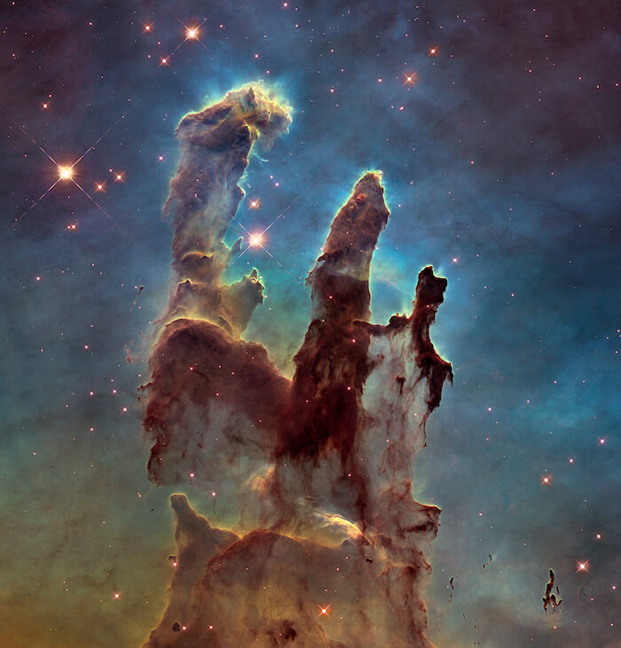
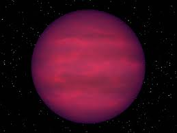
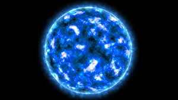

An Overview on Stars
Stars are massive spheres of hot, glowing plasma are born from clouds of gas and dust, live for millions to billions of years, and eventually die in dramatic explosions or slow fades. Their life cycle determines the chemical makeup of the universe, as they forge elements necessary for planets and even life itself.
Formation of Stars: Birth in Nebulae

Stars are born within vast clouds of gas and dust known as nebulae. These stellar nurseries, such as the famous Orion Nebula, contain hydrogen and other elements that, under the influence of gravity, start to clump together. As more material accumulates, the core of the forming star—called a protostar—heats up due to gravitational compression.
When the core temperature reaches about 10 million degrees Celsius, nuclear fusion ignites. Hydrogen atoms fuse into helium, releasing an enormous amount of energy in the process. This marks the transition from a protostar to a fully-fledged star. The outward pressure from fusion counteracts the inward pull of gravity, stabilizing the star in what is known as hydrostatic equilibrium.
Types of Stars: A Cosmic Spectrum
Not all stars are the same. Their characteristics depend on their mass, temperature, and composition. The Hertzsprung-Russell (H-R) diagram is used to classify stars based on their brightness and temperature.
The majority of stars, including the Sun, belong to the main sequence. These stars fuse hydrogen into helium in their cores, a process that defines most of their lifetimes. Smaller stars burn their fuel slowly and live for billions of years, while larger stars burn hotter and deplete their fuel much faster.
Main Sequence Stars
The majority of stars, including the Sun, belong to the main sequence. These stars fuse hydrogen into helium in their cores, a process that defines most of their lifetimes. Smaller stars burn their fuel slowly and live for billions of years, while larger stars burn hotter and deplete their fuel much faster.
The Evolution of Stars: Their Life and Death
As stars age, they undergo significant transformations. Their fate is primarily determined by their initial mass.
Low-Mass Stars: The Gentle Giants

Stars similar to or smaller than the Sun eventually exhaust their hydrogen fuel. As fusion slows down, the core contracts under gravity, while the outer layers expand and cool, turning the star into a red giant.
After shedding their outer layers into a planetary nebula, the remaining core becomes a white dwarf—a dense, Earth-sized remnant that no longer undergoes fusion. Over billions of years, it cools down and fades into a black dwarf, a hypothetical final stage that takes longer than the current age of the universe to form.
Massive Stars: The Cosmic Fireworks

For stars much larger than the Sun, the end of life is far more dramatic. After exhausting hydrogen, they begin fusing heavier elements like helium, carbon, oxygen, and even iron in their cores. This fusion process continues until iron is formed, at which point fusion can no longer produce energy.
With no outward pressure to counteract gravity, the core collapses violently, triggering a supernova explosion. This explosion scatters the star’s outer layers into space, enriching the cosmos with heavy elements essential for forming planets and life. The remnants of these explosions become either a neutron star or, if the core is massive enough, a black hole.
Neutron Stars

These incredibly dense remnants pack more mass than the Sun into a city-sized sphere. Some neutron stars, called pulsars, spin rapidly and emit beams of radiation like cosmic lighthouses.
Black Holes